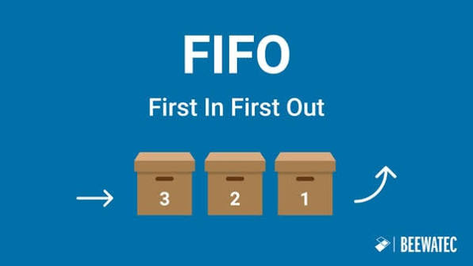
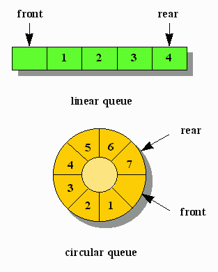

Estructuras de Datos: Conceptos fundamentales, implementaciones estáticas (Circulares), dinámicas y sus aplicaciones en el Sistema Operativo.
Una COLA es un tipo especial de lista lineal, un concepto que abunda en la vida cotidiana (bancos, supermercado).

/* FIFO en acción */
Al remover el último elemento, la cola queda vacía. Una vez vacía, no se pueden sacar elementos.
Cualquier intento de desencolar o acceder a elementos de una Cola Vacía causa un Subdesbordamiento (error fatal en ejecución).
Aplica principalmente en implementaciones estáticas. Ocurre cuando el hardware o arreglo llega a su límite de capacidad.
Cualquier intento de introducir elementos a una cola que ha llegado a su MÁXIMO_TAMAÑO (Cola Llena) causa un Desbordamiento.
Se utiliza un arreglo estático de tamaño definido MAX.
| C Frente |
D | E | F | G Final |
||
| 0 | 1 | 2 | 3 | 4 | 5 | 6 |
Los índices 0 y 1 quedan desperdiciados.
El objetivo es aprovechar al máximo el espacio del arreglo sin desplazar los datos.
%), formando lógicamente un "anillo" infinito.
Reutilización de Memoria Activa
Representación mediante apuntadores y Nodos para eliminar por completo la restricción de tamaño máximo de los arreglos estáticos.
Cada bloque (nodo) se reserva sobre la marcha en la RAM y apunta al siguiente.
Mantiene el control absoluto de dónde empieza (Frente) y dónde termina (Final).
Las colas se utilizan fundamentalmente cuando varios procesos deben esperar por un recurso o servicio de hardware.
Spooler procesando trabajos
Gracias por su atención a la revisión del TAD Cola.